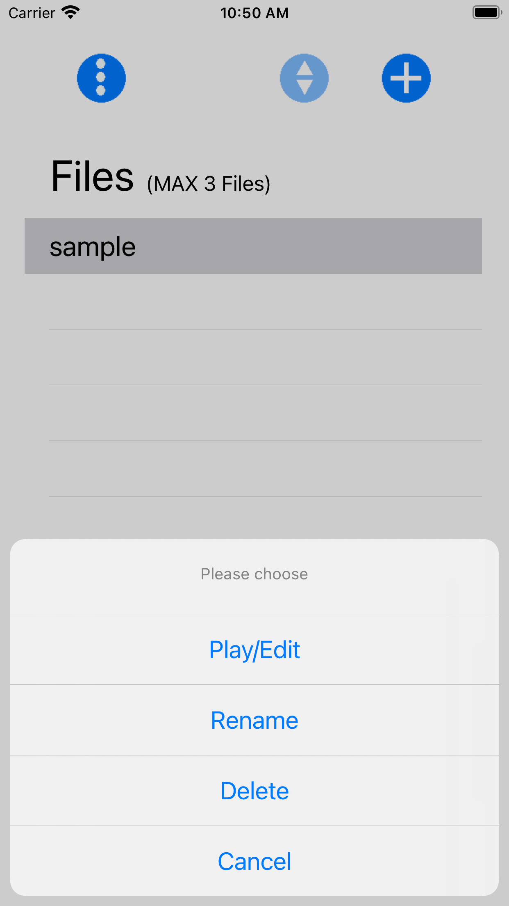
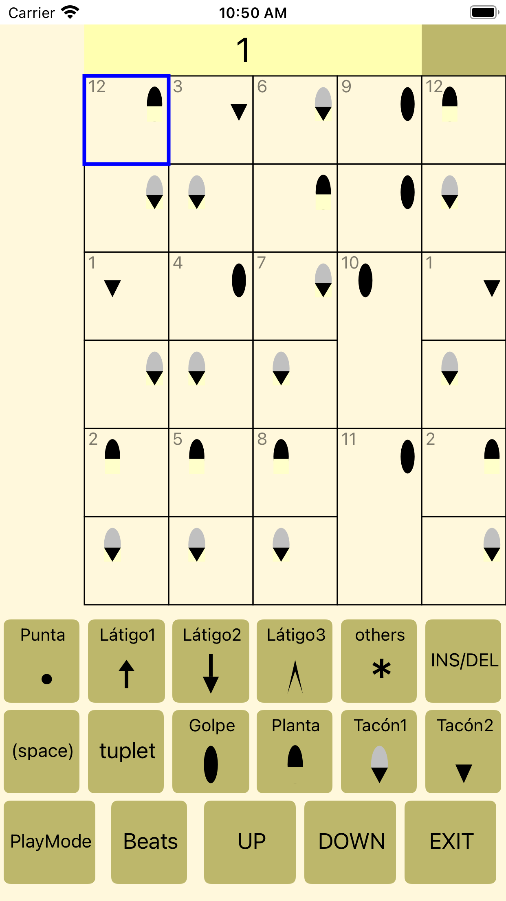
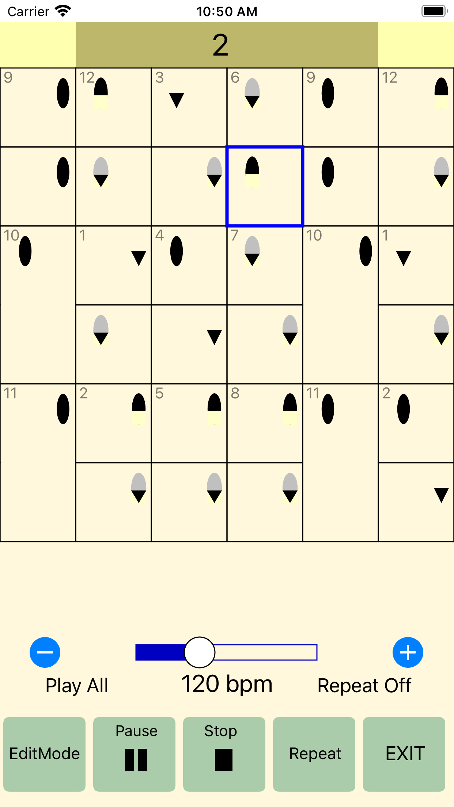
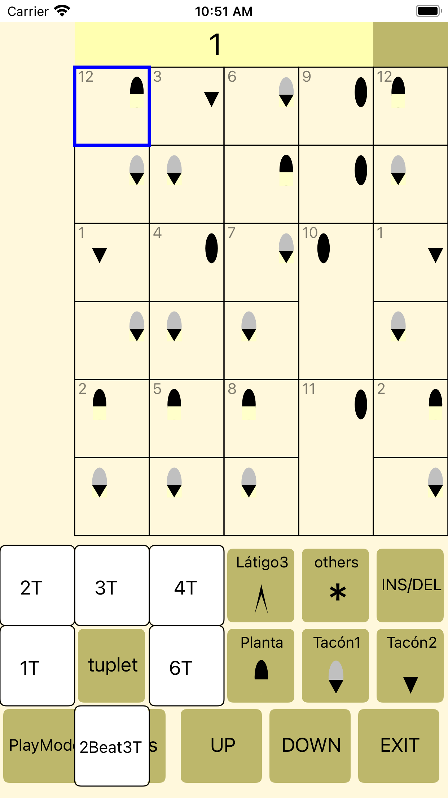
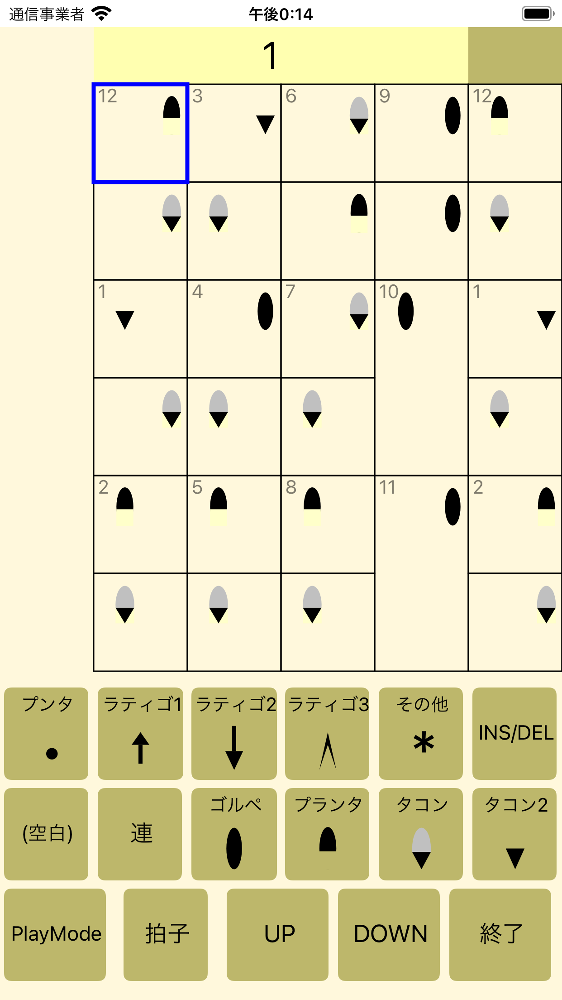
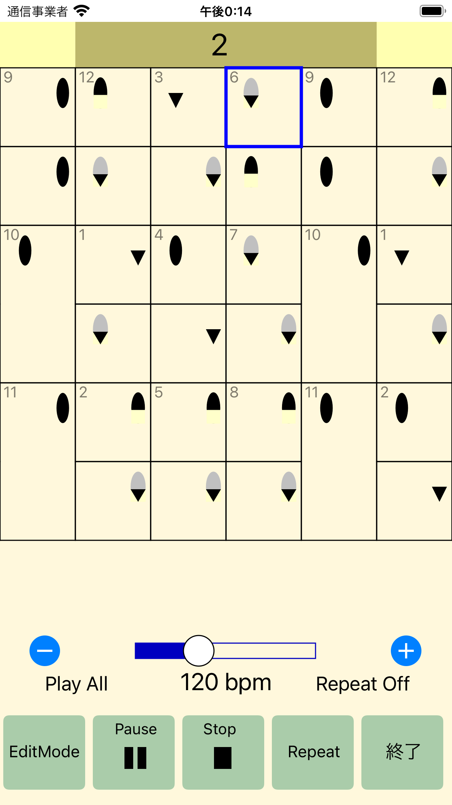
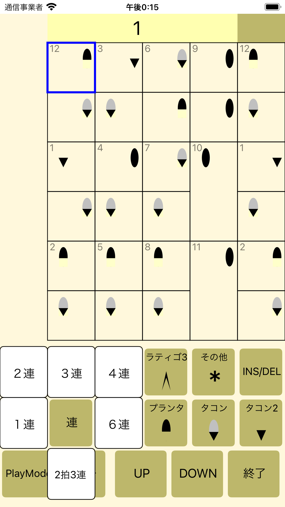

[English]
PASO FLAMENCO [IOS]
This page is a support page for PASO FLAMENCO.
[Contact information] hisanobun15@gmail.com
We will not provide or disclose the sender's email address or inquiry details to a third party.
[overview]
It is an application to input and play flamenco steps.
[screen]




1. Top screen
Round button(3 circles)
Information
Term of service
Privacy Policy
Guide to full version---------It is not displayed in the charged state.
Round button(2 triangles)
The sort status can be switched when there are two or more files.
Round button(+)
New data creation
Files(MAX 3 Files) ---Displayed when billing has not been completed(up to 3 data can be created)
Files-----------------Displayed when charged (Full Version). About 900 data can be created.
2. Editing screen
Round button(+) Or select data (file) to enter the screen.
On the edit screen, there is an item for flick input.
3. Play screen
Press the "Play Mode" button on the edit screen to display the Play screen.
On the Play screen, you can play the entered data.
[Full Version(Paid version)]
The full version increases the number of files that can be created.
Free version-------------------Up to 3 files(including sample data)
Full Version(Paid version)-----About 900 files
The full version does not show ads.
[Japanese]
PASO FLAMENCO [IOS]
本ページは、PASO FLAMENCOのサポートページです。
[お問い合わせ先] hisanobun15@gmail.com
送信元メールアドレス、お問い合わせ内容を第三者に提供・開示することはいたしません。
[概要]
フラメンコのステップの入力・再生するアプリです。
[画面]



1. Top画面
丸ボタン（3個の丸）
情報
利用規約
プライバシーポリシー
有料版へのご案内---------課金済み状態では表示されません。
丸ボタン（2個の三角）
２ファイル以上ある場合に、ソート状態が切り替えれます。
丸ボタン（+）
新規データ作成
Files(MAX 3 Files) ---課金未済み時に表示（作成できるデータは３件まで）
Files-----------------課金済み（Full Version、有料版）時に表示。約900件のデータ作成が可能です。
2. 編集画面
丸ボタン（+） あるいは、データ（ファイル）を選択して、画面に入ります。
編集画面では、フリック入力の項目があります。
3. Play画面
編集画面の"PlayMode"ボタンを押すと、Play画面になります。
Play画面で、入力したデータを再生できます。
[有料版(Full Version)]
有料版では作成できるファイル数が増えます。
無料版・・・最大3ファイル（sampleデータ含む）
有料版・・・約900ファイル
有料版では、広告は表示されません。
Last Update 2021/8/18 14:53